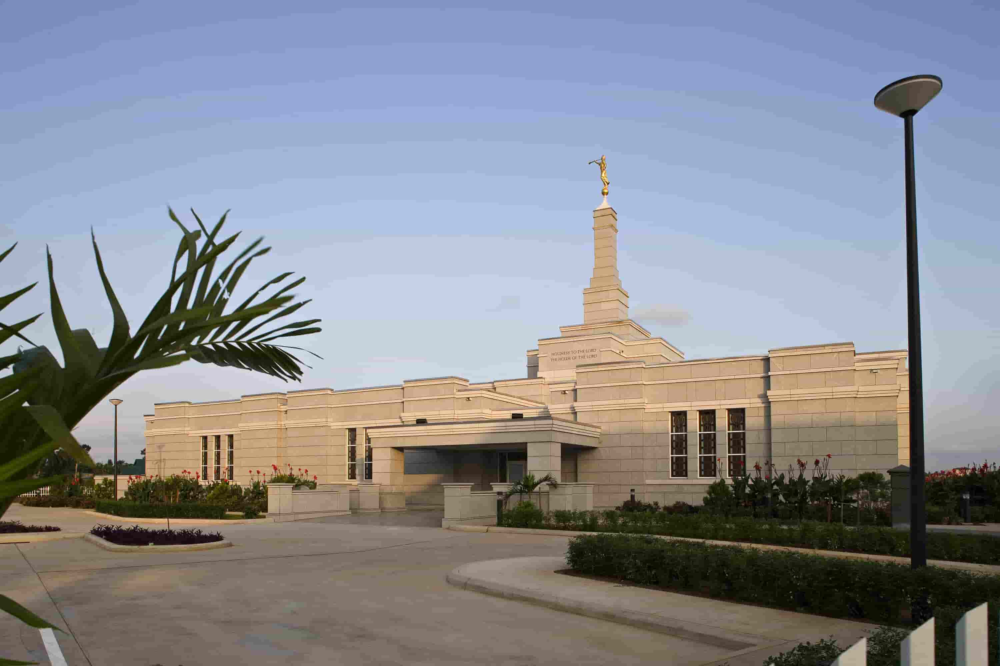
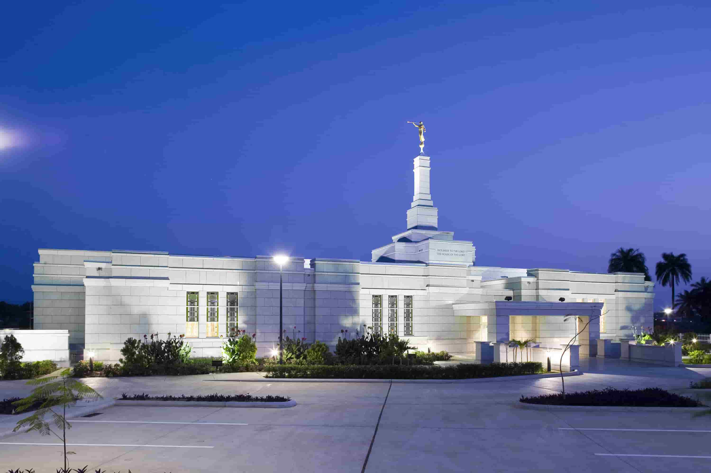
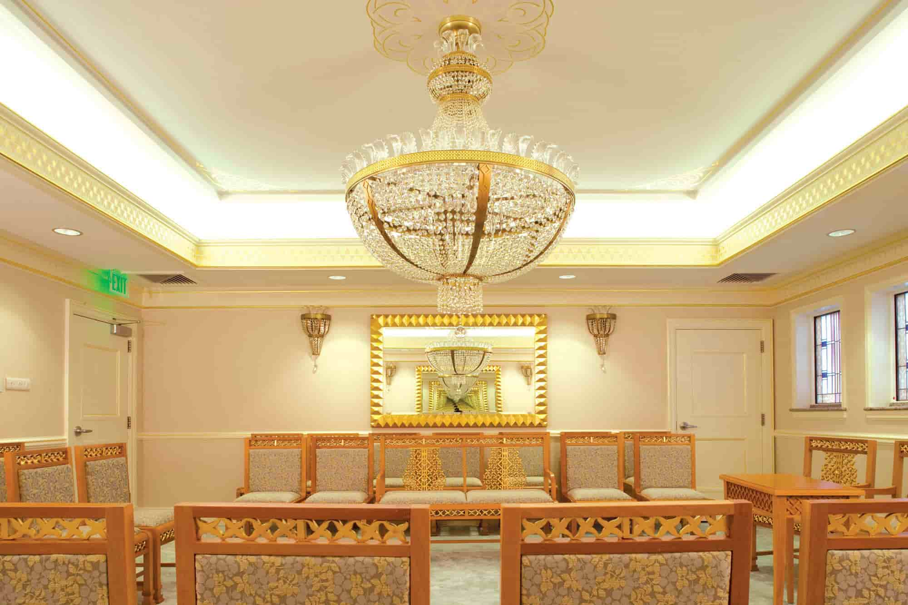
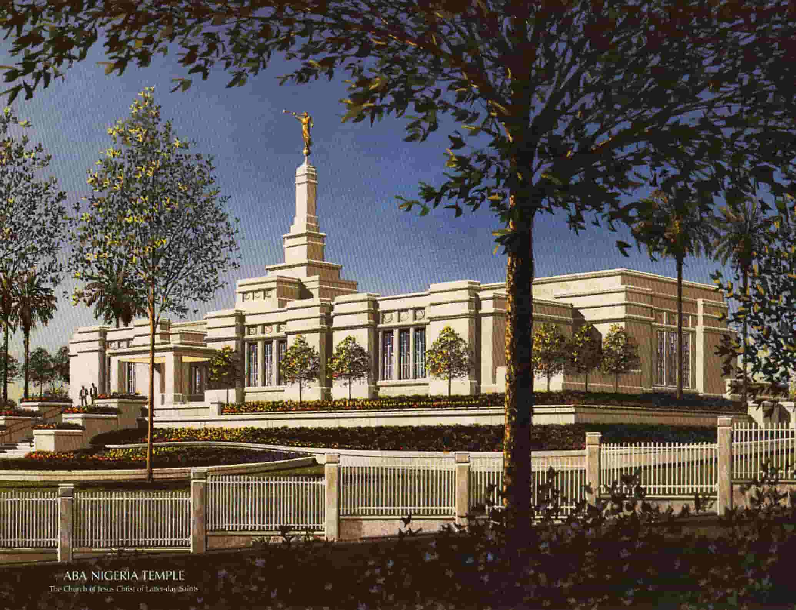

Front View of Temple at Aba

Night time View of Temple at Aba

Interior View of Temple at Aba

Frontal view of temple from far awayFront View of Temple at AbaNight time View of Temple at AbaInterior View of Temple at AbaFrontal view of temple from far awayFront View of Temple at AbaNight time View of Temple at Aba